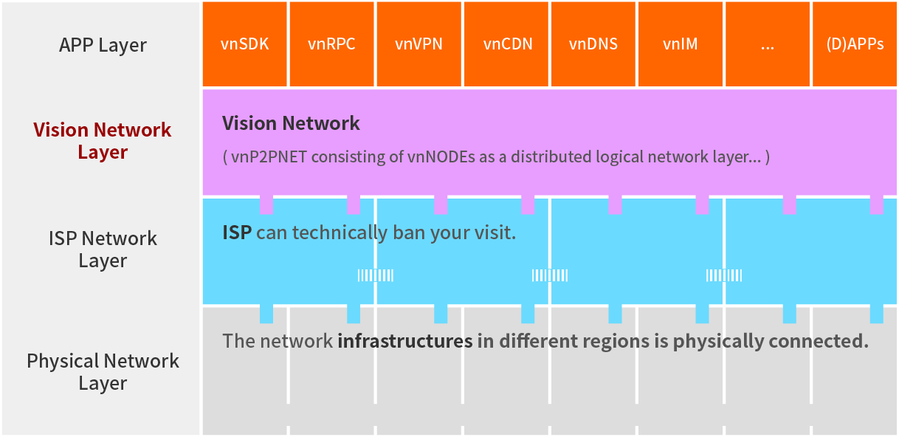
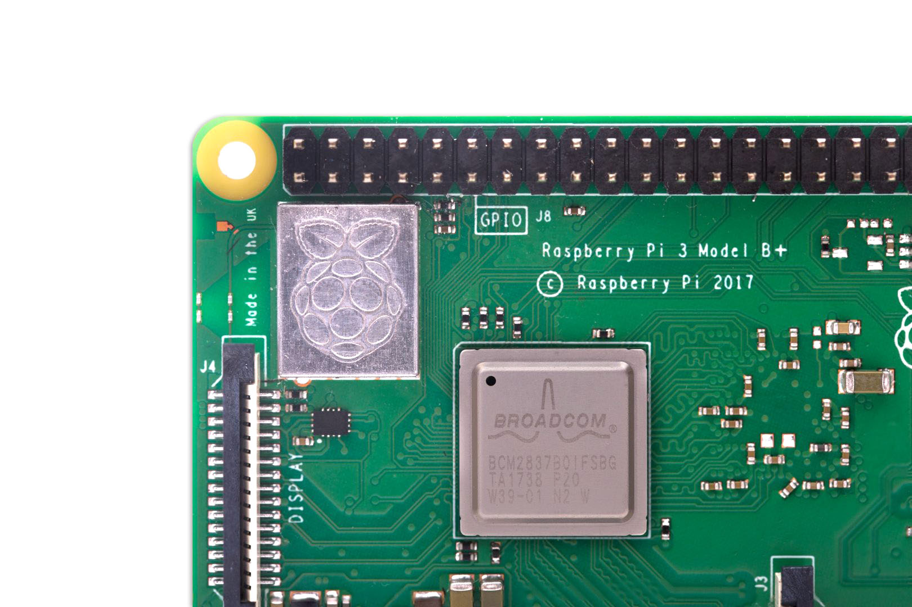
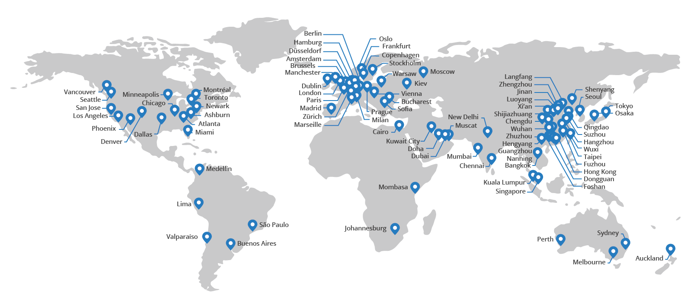

Application description and economic model¶
A Distributed Extensible Virtual Network¶
{kind=link}
The existing infrastructures in the world is physically connected. While ISPs (Internet Service Providers) provide users with network access services, they can centralize blockades and block your access. The Beyou Network uses distributed peer-to-peer network technology to build a distributed, intelligent virtual network on the physical layer and ISP network layer through a large number of nodes, which can surely connect the whole world.
The Beyou Network provides distributed services such as Auto-Proxy, multi-layer anonymous network, IM, non-polluted DNS, even CDN and DDoS defense, etc. The Stoken – Unique token in the Beyou Network ecosystem with stable value scale will be used in the ecology and produce an incentive effect. Everyone can participate in distributed network construction. We believe the Beyou Network, a distributed Internet infrastructure will make the Internet more open, more equal, more stable, more efficient, safer and freer.
1 Stoken = 100 GB client network traffic (price at IDC is $8.0 - 8.5)
The user running the service node makes use of idle network resources to earn Stokens, and the user or organization that needs the service uses Stokens exchange to settle through the vnCHAIN blockchain.
Turn user’s idle network resources into cash¶
The vast majority of home broadband networks use less than 3% of the full-year network, a large number of network resources are idle. These idle resource fragments can be combined through technical means and can generate huge value.
With the help of Beyou Network, users participating in the ecology can easily run BEYOU node programs on computers, routers, TV boxes, and even mobile devices, even if they do not have the professional technical ability to share idle network resources. The longer the time is online, the more Stokens can be obtained, which can be used to exchange the services you need in the ecology, or sell them on the exchange to turn your idle network resources into cash.
VPN, Virtual Private Network¶
Virtual Private Network, abbreviated as VPN, is commonly used to connect private networks between large and medium-sized enterprises or groups. It is a kind of way that can use open network (usually Internet) to transmit network information of intranet. VPN uses cryptographic tunneling protocol to realize accurate and secure transmission of information.
In some regional networks where access is selectively restricted or blocked, because classic proxy services (such as HTTP proxy or Socks5 proxy, tec.) have been nearly impossible to use, VPN technology has almost become the preferred choice for cross the network blockages.
Using VPN to cross the network blockades – obvious rigid demands¶
Just in China, several tens of millions of users with rigid demands have not been satisfied. They need services like Google, Wikipedia, Facebook, Twitter, and access to professional websites in many fields. They are mainly:
Scientists and scholars
Companies engaged in scientific research
International trade practitioners
Foreigner in China, for working, studying or traveling.
Design Company, Film Company, Designer
Foreign-funded enterprise employees (mainly mobile office needs)
Overseas game users
Crypto-currency investors / holders / developers
Others
The network environment in China mainland is quite typical, the demand is concentrated and universal. Actually, not only in China mainland, but also in many parts of the world. For example, North America, Europe, and North Asia, there are also restrictions or speed limits or blockings.
Current situation and problems of traditional VPN¶
At present, the main way for users to go through the network blockade is to buy the VPN services provided by commercial software on a monthly basis, and very few users with technical ability may build their own servers.
These companies and software services are affected by various factors, such as clear organization, limited server IP concentration, and unstable service due to the upgrading of the blockade technology, business policies, ethics, speed limit or even close the company, and so on is not uncommon.
vnVPN¶
A decentralized distributed VPN service with unlimited nodes can cross the blockade, and avoid DNS pollution. Rigid demand, huge base, clear technical path.
The business logic of matching supply and demand is similar to shared economy models such as Ube. The technical advantage is that there is no need to set up a centralized intermediary organization, vnVPN create a decentralized platform based on blockchain and code rule. The contract is settled automatically, the node inside the wall pays the Stoken – Unique token in the Beyou Network ecosystem as the demand side, and the outside node uses the idle bandwidth as the service party to provide the encrypted traffic-proxy service and automatically accept the Stoken – Unique token in the Beyou Network ecosystem settlement, and use the PoT consensus based on the traffic. Online service, blockchain settlement.
What can vnVPN helps you?¶
- Cross the network blockade
Without restriction, you can access any content. No matter where you are, vnVPN can always help you connect to anywhere of the Internet easily.
- Use wireless networks anywhere safely
The widely used wireless hotspots not only bring convenience to users, but also bury the security problems. People who use the same network can easily eavesdrop on unprotected communications.
If you are in a bank, airport, hotel, restaurant, coffee shop, hospital, shopping mall, or any other public network, using vnVPN will allow all your communications to use secure encrypted tunnels and avoid being hacked.
- One-touch connection
The vnVPN interface is concise and clean, with one-click connection and easy to use, it does not require complex configuration and can be kept running in the background.
- Smart routing
Smart offload mode can automatically determine whether the access is smooth. Only when the communication is blocked, the vnVPN network proxy is activated to save the traffic cost.
Advantages of the vnVPN¶
vnVPN |
Traditional VPN |
Non VPN |
|
Cross the network blockade |
Yes |
Yes |
No |
Privacy protection |
Yes |
Part |
No |
Never breakdown |
Yes |
No |
/ |
Payment methods |
By traffic |
Monthly/yearly |
/ |
Speed limit |
Fast |
Relatively fast |
/ |
Price level |
Cheap |
Expensive |
/ |
Number of nodes |
Unlimited |
Limited |
/ |
Users can participate |
Yes |
No |
/ |
Traffic is permanently valid |
Yes |
No |
/ |
Traversing regional technology blockages using global user dynamic IP communications
Built-in vnDNS service to eliminate centralized DNS pollution
User privacy protection mechanism
Infinite node
Zero management of service nodes, turn user’s idle network resources into cash
Zero configuration of demand node, automatic update, smart proxy routing with vnPAC
Traffic is permanently valid with no limit
CDN, Content Distribution Network¶
CDN is the content distribution network. By setting up node servers everywhere in the network, users can get the required content near the them, make the content more quickly and more stable, solve the situation of Internet network congestion, and improve the speed of communications to the web site.
Cost and efficiency demands of CDN service¶
Traditional centralized CDN services rely on IDC or cloud service providers. The number of nodes is limited, the servers and bandwidth resources are expensive. The website has to pay too much for it, however the efficiency and the user experience are also limited.
vnCDN¶
A decentralized distributed content of the accelerated distribution services, with unlimited nodes, it will be faster, has better prices and transparent measurement.
The traditional centralized CDN service has great potential in optimizing efficiency and cost. Due to the limitation of IDC and cloud service providers, not only the number of nodes is limited, but also the traffic is expensive. Its central main operation is also often accused of data fraud and fuzzy accounting opaque.
The vnCDN combines blockchain technology, distributed network and traditional CDN technology to share a huge user base with vnVPN, truly global infinite nodes, and more users can easily access computers, routers, TV boxes, mobile devices, or even just a RaspberryPI device running BEYOU node programs, taking advantage of the unlimited traffic and cost advantages of home bandwidth, sharing their idle bandwidth and storage, generating revenue, making Internet acceleration nodes ubiquitous. It also provides more affordable, faster, more nodes and transparent, metrological distributed CDN services for website owners who need to accelerate.
Advantages of the vnCDN¶
vnCDN |
Traditional CDN |
Direct to host |
|
Number of nodes |
Unlimited |
Dozens |
Only one |
Speed limit |
Fast |
Relatively fast |
Normal |
Efficiency |
High |
Relatively high |
Normal |
Price level |
Cheap |
Expensive |
Normal |
Users can participate |
Yes |
No |
/ |
Open SDK |
Yes |
No |
/ |
Efficiency and user experience increased by more than 10 times
Sharing a huge user base with vnVPN, truly global infinite nodes
Allow users to use idle resources to participate in caching and distribution, and to obtain the traffic mining benefits of the PoT consensus mechanism
Family VS. IDC，cost advantage of killer level
Provide SDK to the admin management of the website, based on blockchain, the data is true and transparent, there is no possibility of fraud
DDoS Attack¶
Distributed Denial-of-Service Attack, abbreviated as DDoS attack or DDoS, also called flood attack, is a network attack method in which a hacker uses a plurality of hacked computers to forge a large number of normal requests. The target is to exhaust computer’s network or the system resources, temporarily interrupting or stopping the service, causing its normal users to lose connections.
DDoS Defense¶
Through hacker intrusion detection, multi-authentication and filtering of traffic is designed to filter traffic that blocks network bandwidth and allow normal access traffic to pass through, protecting the target computer, website or service.
The situation and problems of traditional DDoS Defense¶
DDoS Defense is one of the major cost for services such as websites and APPs.
Because of intermittent demand, self-built protective server resources are too expensive to afford, so generally purchasing professional services is the only choice. The service provider provides traffic cleaning and protection services by setting up Access Gateway. The service provider is not much, Monopoly Competition Market.
Generally speaking, it consists of a monthly service fee and a resource consumption cost. Even if it is an entry-level service, it will cost about a few thousand dollars per month. This is simply the basic cost regardless of whether or not there is an attack, and the cost of resource consumption once the attack occurs is much more expensive.
vnDDoS Defense¶
vnDDoS takes full advantage of large number of distributed nodes and low cost by using idle bandwidth to provide hybrid DDoS defense solutions and services.
More nodes, lower prices, traffic-based payments, and reliable services.
The advantage of vnDDoS security system¶
vnDDoS Defense |
Traditional DDoS Defense |
|
Pay for used |
Yes |
Part |
monthly fee |
None |
Expensive |
Nodes |
Unlimited |
Hundreds |
Price level |
Lower |
Much higher |
Users participation |
Yes |
No |
SDK support |
Yes |
No |
Proof of Traffic¶
Compared with the workload of Proof of Work, it is proved that the accounting method of PoW does not require equipment competition or power consumption, but writes the ratio of Stoken – Unique token in the Beyou Network ecosystem to network traffic flow resource service as a constant definition in the underlying code.
Stoken – Unique token in the Beyou Network ecosystem¶
Stoken is the unique token in the Beyou Network ecosystem,
which uses Proof of Traffic consensus mechanism. It is the native asset on the vnCHAIN.
At the beginning of the project, Stoken – Unique token in the Beyou Network ecosystem will be strictly based on the ERC20 token standard, it is created on the Ethereum network. After the vnCHAIN main network is officially installed and stabilized, the image will be migrated through signature verification.
1 Stoken = 100GB client traffic flow¶
In the underlying code,
we defined per unit of Stoken as the client traffic of 100GBytes in the Beyou Network,
that is: 1 Stoken = 100GB client traffic flow.
PoT vs. PoW¶
Proof of Traffic |
Proof of work |
|
Hardware requirements |
Low |
Higher and higher |
Power consumption |
Very economical |
Extremely wasteful |
Equipment competition and power waste are recognized by the PoW consensus mechanism as the two major persistent diseases.
From the beginning of CPU mining, going through GPUs, FPGAs, and so on, generation after generation of ASIC chip mining machines that were createdfor the mining priced thousands of dollars, these constantly updating equipment, in addition to the internal friction of the accounting rights, and there is no other value for humanity.
The consumption of electricity is even more fearless. According to DigiConomist, 2017, bitcoin mining consumes 30 billion kilowatts of electricity, accounts for 0.13% of global electricity consumption, exceeds the national electricity consumption of dozens of countries, and showing a rising trend year by year.
{kind=link}
The Beyou Network pioneered the definition of the Proof of Traffic consensus mechanism, the BEYOU node has only a very low performance requirement for the device, rather than a more meaningful power race. A Raspberry Pi (see attached, only consumes 1 degree of electric power per week) which priced $35, is enough to meet the hardware requirements of a node, and higher computing performance will not bring about a linear increase in revenue.
In the age of the Internet, bandwidth and traffic are clearly valued and easily measurable resources. Quantifying the traffic services provided by nodes as universal equivalents that are more currency means not only a solid value base but also Stoken’s dollar price is more stable, and can effectively avoid the news pricing, PR pricing, emotional pricing. And on the other way, it effectively avoids unrestrained price speculation at the same time.
The price of resource in an IDC¶
For 100GB network traffic, there is a price reference for mature IDC, with Amazon Web Services AWS, for example, priced at about $8.50 per 100GB traffic and Google Cloud Platform GCP at about $8.0.
Accelerating traffic is more expensive, while ordinary traffic is cheaper.
CDN needs node storage and outlet traffic, and VPN service needs both down-link and up-link traffic to complete proxy forwarding, that is, 100GB client traffic is about equal to the traffic of 200GB on the service-side (100GB up-link 100GB down-link).
Therefore, 100 GB client traffic flow, anchored to 1 Stoken, also coincides with the actual intrinsic use value.
- AWS Amazon Web Services:
- GCP Google Cloud Platform:
The Stoken dollar price should increase to the internal value gradually and be relatively stable¶
We believe that the legal currency will not disappear in the short term, and that long-standing habits will allow more people to use the fiat currency to price products or services. At the same time, we expect that the Stoken value scale after ecological maturity is relatively stable (that is, the legal currency price is relatively stable), and the basic setting of 1 Stoken = 100 GB can ensure that the market circulation price of Stoken gradually matures with the ecological value in practical use value.
Official server nodes around the world would provide initial ecological services to users¶
{kind=link}
In the initial stage of ecological start-up, the official server nodes in 86 IDCs around the world will provide stable services to users. As time goes on, more node programs will be run by users, and the ecology will become more mature.